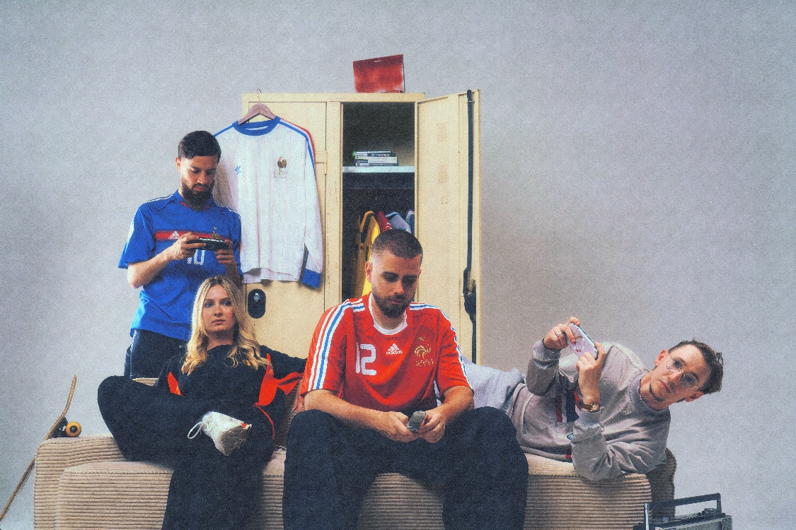

Le projet
Le média foot de Penalty Studio™, entre culture foot, jeux et humour.
Point de Penalty produit des contenus autour de la culture foot : formats YouTube comme Le Penalty, avec des joueurs et des créateurs invités, et contenus courts pour les réseaux.
Mon rôle
J'interviens en renfort : idées, posts et montage vidéo.
Quand l'équipe a besoin de bras, je viens en soutien : je propose des idées de contenus, je crée des posts et je monte des vidéos pour les réseaux.
À voir